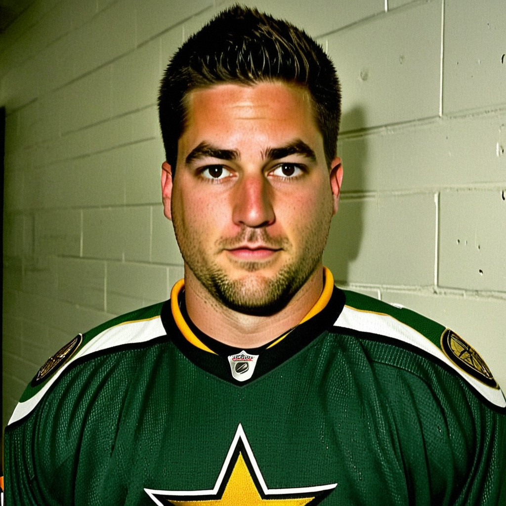

Marty Turco sleeps in his own bed and stops 21
The Stars' goaltender says the 13-3 home record starts with the legs being better and the head being clear, and says he did not change a thing between the Philly loss and tonight.
 Jan KowalczykRinkside reporter and studio host · The Tunnel
Jan KowalczykRinkside reporter and studio host · The Tunnel
2:24 · synthetic voices, produced from the record · download
 Marty Turco94 stopped 21 of 23 as the
Marty Turco94 stopped 21 of 23 as the  Dallas Stars Stars beat
Dallas Stars Stars beat  Detroit Red Wings 3-2 at home on 2004-12-29, a win that makes them 13-3 on their own ice this season against 12-11 on the road. After the game, The Tunnel's Jan Kowalczyk asked the 29-year-old goaltender what this building gives him that the other 29 do not, and whether anything in his game shifted since the 1-5 loss in Philadelphia last week.
Detroit Red Wings 3-2 at home on 2004-12-29, a win that makes them 13-3 on their own ice this season against 12-11 on the road. After the game, The Tunnel's Jan Kowalczyk asked the 29-year-old goaltender what this building gives him that the other 29 do not, and whether anything in his game shifted since the 1-5 loss in Philadelphia last week.
Transcript
Jan Kowalczyk here in the corridor with Marty Turco, who just stopped 21 of 23 in a 3-2 win over Detroit Red Wings®. Marty, thirteen and three here this season, twelve and eleven on the road. What's the difference?
Yeah, Jan. Well, obviously you come in sharper when you're here. You're sleeping in your own bed, you're eating your own food, you're not on a bus at two in the morning. So the legs are a little better, the head's a little clearer. And the crowd, you know, in a tight one the building gets loud and it lifts you. You feed off that. On the road, when it goes quiet, you can hear their bench. That's a different game.
You told me last time we spoke that December is just a bus and another ice in thirty hours. Tonight you get to go home and sleep. Does tomorrow feel different?
Well, yeah, I mean, nine hours in your own bed, I'll take that over the bus every night of December. You come in, the legs are better, you don't feel like, you know, you were jostled around for six hours. Over a stretch of twenty games that difference adds up. You can see it in the standings, 13 and 3 versus 12 and 11. That's the bus, man. That's just the bus.
Let me get to your own game. The Bureau's Development Index has you up one from your base right now. You were solid tonight after that Philly night where you owned the first one. What shifted?
I don't, I don't think anything shifted, you know? I think I just, I did the same thing. That Philly game, I was late across, I saw it, I told you that. And I went back the next day, I watched it, and I moved on. You don't, you don't overhaul a routine because of one period. The Index says up one, fine, but I'm just, I'm trying to track the puck clean every night and the Index takes care of itself.
You talked about tracking clean tonight. Stu Barnes put two in, Mark Messier had one, and you were just managing. Is that the best night a goaltender gets?
Oh, obviously. When Stu puts two up and Mess gets one, I'm reading the play before it's there, you know? I see it, I'm set, puck's in my chest. I don't have to throw my body across the crease. That's a good night for me. I'm not the story, they're the story, and I'll take that all day long.
The inconsistency thing, though. It follows you. You know where you sit on that. How do you feel about it at 29?
I mean, you know, I've heard it, yeah. Some nights I'm great, some nights I'm just, I'm there. I'm not gonna, I'm not gonna sit here and tell you I'm something I'm not. But I look at 19 wins, and I look at what this group's doing, and the inconsistency hasn't cost us that many. Maybe a couple. You'd like to have them back. But you go out, you get the next one. That's all you can do, right?
Right. One more: the stretch ahead, more at home?
Yeah, the schedule's got us in here a few more, so, I'll take it. You want to ride that 13 and 3 while it's hot. The road's coming, obviously. It's always coming. But not tonight, you know. Tonight I'm sleeping in your own bed.
Marty Turco, thank you. Back to you.